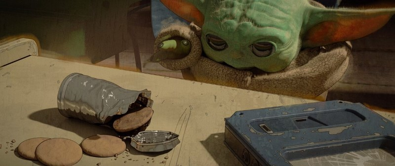

Mandalorian-2
Жанр: мультфильм, комедия, приключения, фэнтези, мультфильм, семейный
Эта актуальная во все времена история для взрослых и детей рассказывается от лица семилетнего брата новорожденного - фантазера Тима, который ревнует его к родителям. Но главный герой - совсем не простой ребенок, он обладает лидерскими задатками, уже носит деловые костюмы и во всем видит бизнес-задачу. Однажды Тим узнает о готовящемся заговоре, целью которого является уничтожение любви, и организовал его директор компании «Puppy Co». Но одному Тиму не по силам его остановить. Мальчику предстоит объединиться со своим «нелюбимым» братом, чтобы спасти родителей и вернуть порядок на Земле.
Режиссеры: Том МакГрат Актеры: Конрад Вернон, ВивиЭнн Йи, Стив Бушеми, Джимми Киммел, Джеймс МакГрат, Алек Болдуин, Майлз Кристофер Бакши, Лиза Кудроу, Дэвид Сорен, Тоби Магуайр
Премьера второго сезона, также состоящего из восьми серий, состоялась 30 октября 2020 года, в то время как работа над третьим сезоном началась еще в апреле 2020 года.
Источник данныхАвтор работы Мунипова Э.